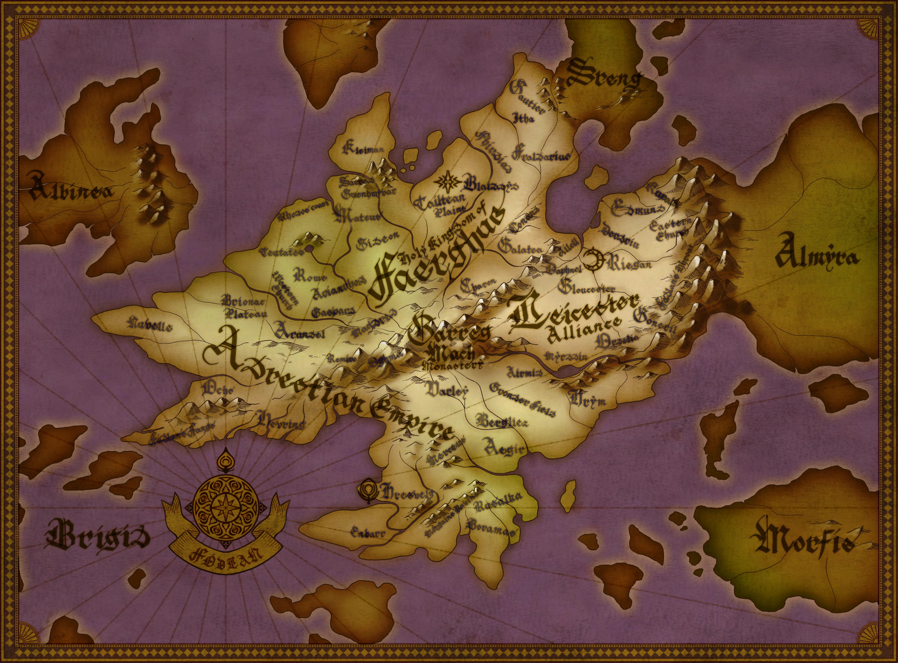

Fire Emblem: Three Houses is a tactical role-playing game developed by Intelligent Systems and published by Nintendo for the Nintendo Switch. Players assume the role of Byleth, a professor at Garreg Mach Monastery, where they choose to lead one of three student houses: the Black Eagles, the Blue Lions, or the Golden Deer. Each house offers a unique perspective on the world of Fódlan and its ongoing conflicts.

This archive focuses specifically on the Blue Lions route, following Dimitri Alexandre Blaiddyd and his classmates as they navigate friendship, duty, loss, and redemption throughout the course of the story. Here you will find character profiles, story overviews, an image gallery, frequently asked questions, and other resources designed to help both new and returning players learn more about the Blue Lions and their place within Fire Emblem: Three Houses.
[Insert Video Here – try and make it inline with the previous paragraph]Whether you are looking to refresh your memory, discover more about your favorite characters, or simply explore the lore of Fódlan, I hope this archive provides an informative and enjoyable experience.
Academy Phase: The Academy Phase serves as the introduction to Fire Emblem: Three Houses and the world of Fódlan. After a chance encounter with three students from Garreg Mach Monastery, the player assumes the role of Byleth, a mercenary who is unexpectedly appointed as a professor at the Officers Academy. Before the story truly begins, players are asked to choose one of three student houses: the Black Eagles, led by Edelgard von Hresvelg; the Blue Lions, led by Dimitri Alexandre Blaiddyd; or the Golden Deer, led by Claude von Riegan. While each route eventually tells a different story, all three houses share the same academy experience during the first half of the game. For this website, the focus begins once Byleth chooses to lead the Blue Lions, following the students of the Holy Kingdom of Faerghus as they train, build relationships, and prepare for the challenges that lie ahead.
Include a hide box for each, maybe include a title somewhere for each phase? If not, I set it up where each section has a title.
The Holy Tomb: The Holy Tomb marks one of the most significant turning points in the Blue Lions route. What begins as a mission to protect a sacred ceremony quickly reveals hidden truths surrounding the Church of Seiros, the mysterious Flame Emperor, and the political tensions that have been developing throughout the academy year. The events that unfold force former classmates onto opposing sides of the conflict and ultimately change the course of Fódlan's future. This chapter serves as the dividing point between the peaceful academy life and the war that follows.
The Battle at Garreg Mach: Following the events of the Holy Tomb, Garreg Mach Monastery becomes the site of a large-scale battle between the Church of Seiros and the Adrestian Empire. As war erupts across Fódlan, Byleth fights alongside the Blue Lions in an attempt to defend the monastery. Although they fight courageously, the battle ends in tragedy, separating Byleth from their students and bringing the academy phase to an abrupt conclusion. This battle signals the beginning of the five-year time skip and marks the transition into the second half of the story.
Five Years Leader: Five years after the Battle of Garreg Mach, Byleth awakens to find that Fódlan has been transformed by war. The once-unified students of the Officers Academy have become soldiers fighting for their respective nations, and the Blue Lions have each followed different paths during the years of conflict. Dimitri, once a compassionate prince, has been consumed by grief and vengeance following the tragedies that befell his kingdom. As Byleth reunites with the remaining members of the Blue Lions, the group begins the difficult task of rebuilding both their house and Dimitri's faith in himself.
The Kingdom’s Liberation: With the Blue Lions reunited, the group sets out to reclaim the Holy Kingdom of Faerghus from those who have seized control during the war. Along the way, Dimitri confronts the trauma, guilt, and hatred that have shaped his actions since the academy days. Supported by Byleth and his friends, he gradually rediscovers the qualities that once made him a respected leader. This portion of the story emphasizes themes of redemption, forgiveness, and the importance of trusting those who stand beside you.
The Final Battle: The Blue Lions' journey culminates in a final confrontation that determines the future of Fódlan. Having overcome countless hardships and personal struggles, Dimitri leads his allies toward the resolution of the conflict that has divided the continent. The ending of the Blue Lions route highlights the consequences of war while emphasizing hope, reconciliation, and the enduring strength of friendship. Through the guidance of Byleth and the bonds formed among the Blue Lions, the story concludes with a vision of a more peaceful future for the Kingdom of Faerghus and all of Fódlan.